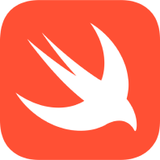

Swift

https://www.swift.org/
Swift é uma linguagem de programação compilada de alto nível, de uso geral e multiparadigma, desenvolvida pela Apple Inc. visando desenvolvimento para dispositivos Apple.
Vantagens
- Prevenção de null pointer
- Potencial para full stack
- Código aberto
Desvantagens
- Pouco suporte em IDEs
- Sem suporte para iOS antigos
- Suporte precário fora do macOS
Usada em
- Asana
- Firefox
- Wikipedia
- Wordpress